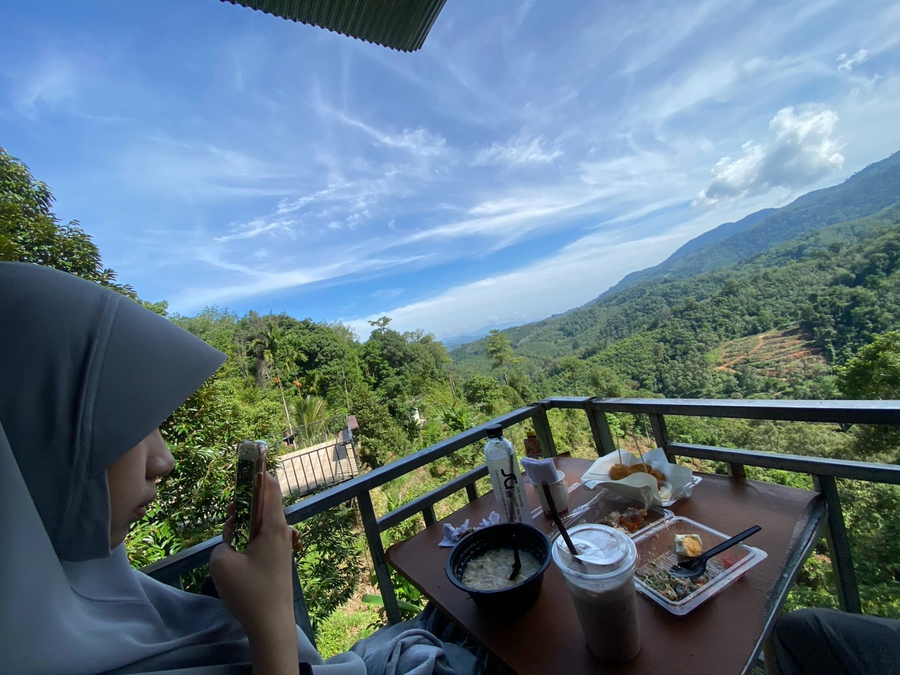
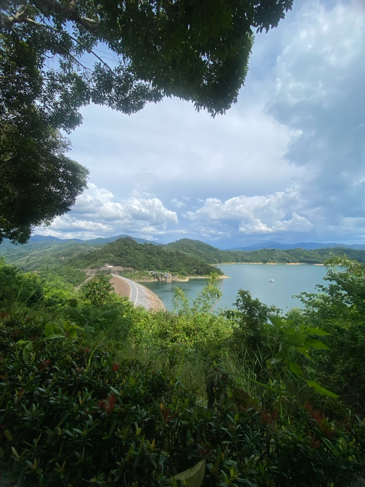
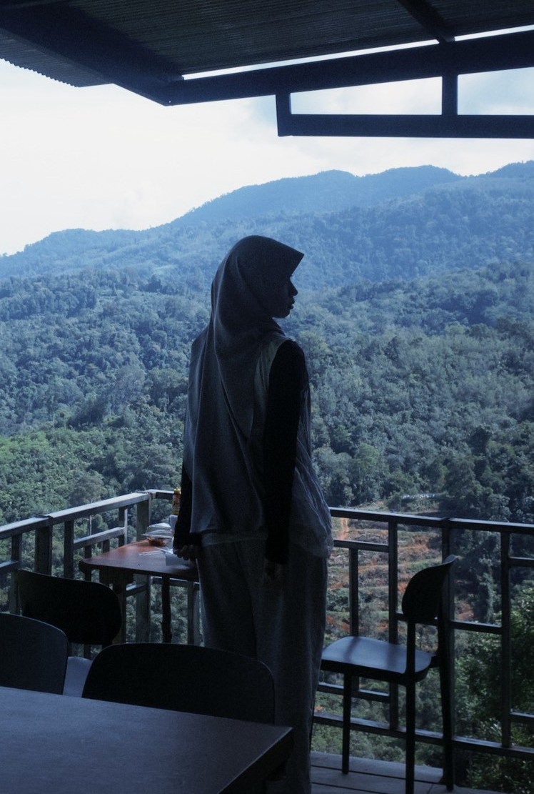
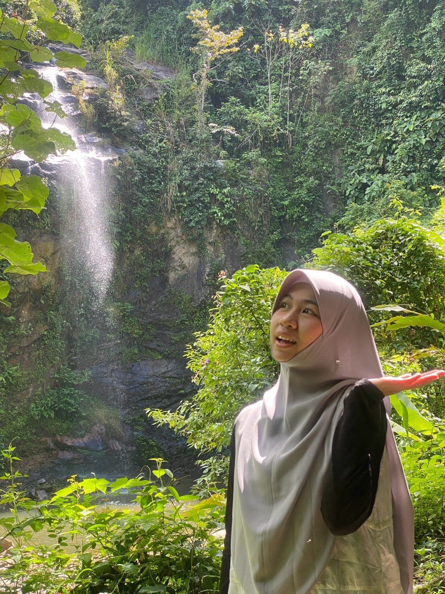
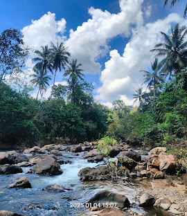
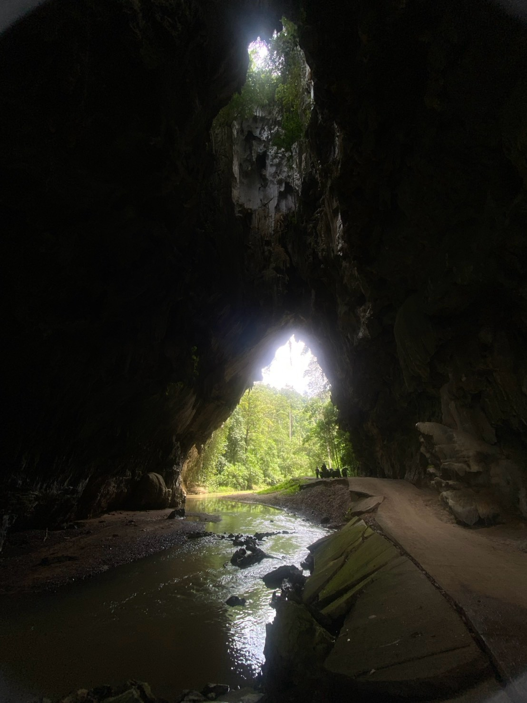
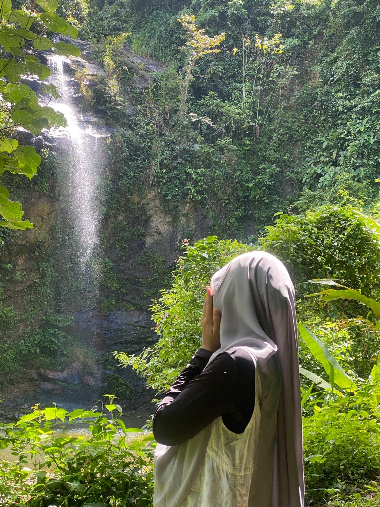
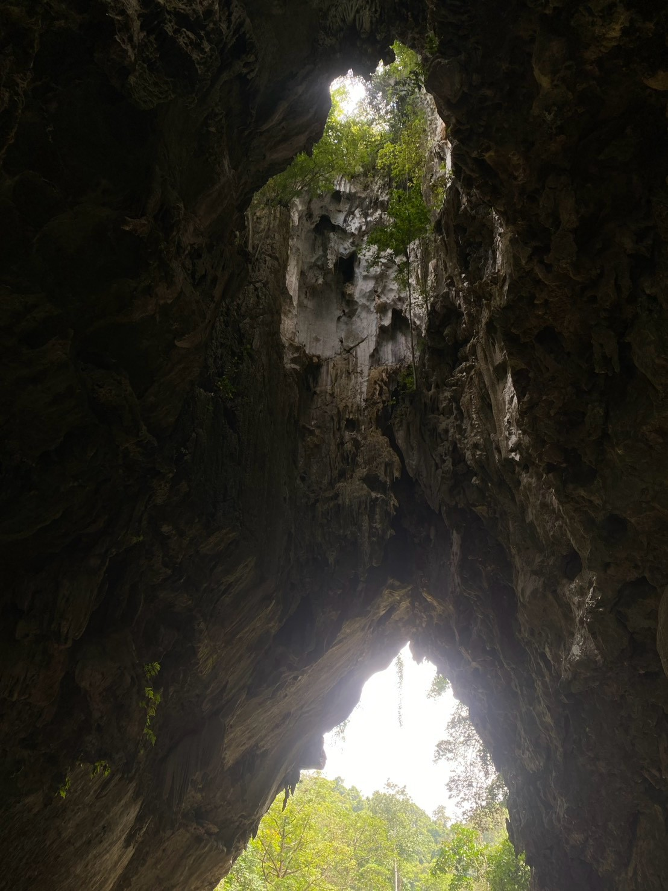
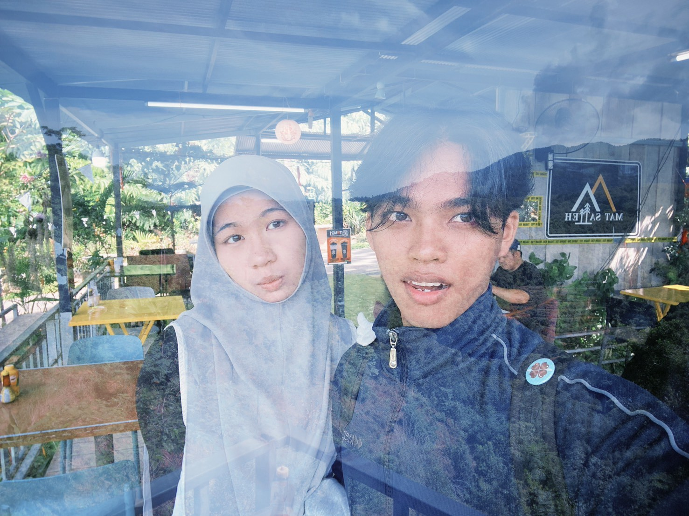
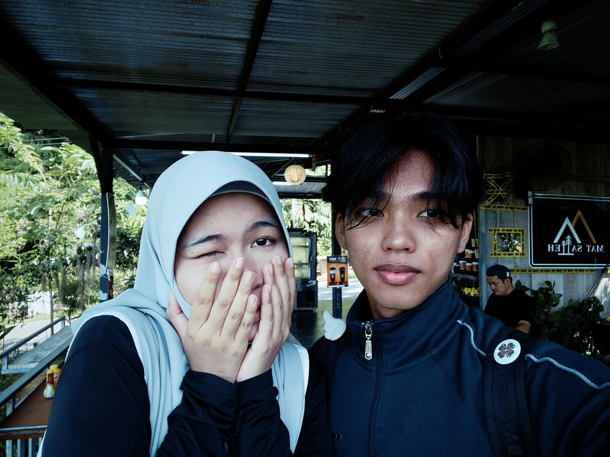

Destination 01
MAT SALLEH Cafe
คาเฟ่บนยอดเขาที่มีวิวภูเขาพาโนรามา 360 องศา สัมผัสบรรยากาศเย็นสบาย จิบกาแฟท่ามกลางสายหมอกและทิวเขาเขียวขจี จุดแรกของทริปที่เปิดประสบการณ์ได้อย่างสวยงาม
ดูบน Google Maps →
Discover Yala, One Journey at a Time
สำรวจยะลา หนึ่งวัน หนึ่งเส้นทาง หนึ่งประสบการณ์ที่ไม่ลืม

ยะลาเป็นจังหวัดเล็ก ๆ ที่เต็มไปด้วยธรรมชาติที่สวยงาม มีทั้งภูเขา ป่าไม้ น้ำตก และสถานที่ท่องเที่ยวที่น่าสนใจหลายแห่ง
ถึงจะเป็นจังหวัดที่ไม่ได้มีทะเลเหมือนจังหวัดอื่น ๆ แต่ก็มีเสน่ห์ในแบบของตัวเอง ทั้งบรรยากาศที่เงียบสงบ วิถีชีวิตของคนในพื้นที่ และความเป็นธรรมชาติที่ยังคงอยู่
ทริปนี้เป็นการขี่รถจักรยานยนต์เที่ยวจังหวัดยะลาแบบไปเช้าเย็นกลับ เลือกเส้นทางที่ได้สัมผัสทั้งธรรมชาติและกิจกรรมสนุก ๆ ในหนึ่งวัน ระหว่างทางได้เจอกับวิวภูเขา ถนนที่ล้อมรอบด้วยต้นไม้ แวะเล่นน้ำตก พักที่คาเฟ่ และเล่นน้ำพักผ่อนริมลำธารบาตูกา
ทริป One Day Trip ยะลา ขี่มอเตอร์ไซค์ สำรวจ 5 จุดเช็คอินในหนึ่งวัน
ออกเดินทาง 07:30 น. — กลับถึงบ้าน 18:40 น.
ไปเช้าเย็นกลับ (Day Trip) เหมาะสำหรับวันหยุดสั้น ๆ
คาเฟ่วิวภูเขา, น้ำตก, เล่นน้ำพักผ่อนริมลำธาร, สำรวจถ้ำ, เขื่อน
คู่รัก, เพื่อน, ครอบครัว ที่รักธรรมชาติและการเดินทางพักผ่อน
ไทม์ไลน์ทริป One Day Trip ยะลา ตั้งแต่เช้าจรดค่ำ
เริ่มต้นเช้าวันใหม่ด้วยการขี่มอเตอร์ไซค์มุ่งหน้าสู่คาเฟ่บนยอดเขา สัมผัสอากาศเย็นสบายและวิวภูเขาสุดอลังการ พร้อมจิบกาแฟรับอรุณ
น้ำตกที่ซ่อนตัวอยู่ในป่าเขียวครึ้ม สายน้ำไหลลงจากหน้าผาสูง ท่ามกลางต้นไม้ใหญ่และพืชเขตร้อน บรรยากาศเย็นสบายตลอดทั้งวัน
สัมผัสบรรยากาศธรรมชาติ เล่นน้ำคลายร้อน และพักผ่อนริมลำธารท่ามกลางความร่มรื่นของป่าไม้
ถ้ำหินปูนขนาดใหญ่ที่มีหินงอกหินย้อยสวยงาม มีลำธารไหลผ่านภายในถ้ำ แสงธรรมชาติที่ส่องลงมาสร้างบรรยากาศที่น่าตื่นตา
จุดชมวิวเขื่อนบางลาง ที่ล้อมรอบด้วยทิวเขาเขียวขจี ผืนน้ำสีเขียวมรกตกว้างใหญ่ เหมาะสำหรับปิดท้ายทริปยามเย็น
เดินทางกลับจากเขื่อนบางลาง → บ้าน จบทริปหนึ่งวันเต็มที่กับธรรมชาติยะลา
5 จุดเช็คอินที่ไม่ควรพลาดในทริปยะลา One Day Trip

คาเฟ่บนยอดเขาที่มีวิวภูเขาพาโนรามา 360 องศา สัมผัสบรรยากาศเย็นสบาย จิบกาแฟท่ามกลางสายหมอกและทิวเขาเขียวขจี จุดแรกของทริปที่เปิดประสบการณ์ได้อย่างสวยงาม
ดูบน Google Maps →
น้ำตกที่ซ่อนตัวอยู่ในป่าเขียวครึ้ม สายน้ำไหลลดหลั่นจากหน้าผา บรรยากาศร่มเย็น เหมาะสำหรับเล่นน้ำและพักผ่อน
ดูบน Google Maps →
สัมผัสบรรยากาศธรรมชาติ เล่นน้ำคลายร้อน และพักผ่อนริมลำธารท่ามกลางความร่มรื่นของป่าไม้
ดูบน Google Maps →
ถ้ำหินปูนขนาดใหญ่ที่มีหินงอกหินย้อยสวยงาม มีลำธารไหลผ่าน แสงธรรมชาติส่องลงมาจากปากถ้ำ สร้างบรรยากาศอันน่าทึ่ง
ดูบน Google Maps →เขื่อนขนาดใหญ่ที่ล้อมรอบด้วยทิวเขาเขียวขจี ผืนน้ำสีเขียวมรกตกว้างใหญ่ จุดชมวิวยามเย็นที่สวยงาม เหมาะสำหรับปิดท้ายทริปอย่างสมบูรณ์แบบ
ดูบน Google Maps →ภาพบรรยากาศจริงจากการเดินทาง คลิกเพื่อดูภาพขยาย




เก็บทุกความทรงจำของทริปนี้ไว้ในวันเดียว
คลิปสั้น ๆ ที่เก็บทุกความทรงจำของทริปนี้ไว้ในวันเดียว ตั้งแต่ออกจากบ้านตอนเช้า แวะคาเฟ่วิวภูเขา เล่นน้ำตก พักผ่อนเล่นน้ำริมลำธารบาตูกา สำรวจถ้ำกระแชง ไปจนถึงชมพระอาทิตย์ลับขอบฟ้าที่เขื่อนบางลาง
คำแนะนำที่มีประโยชน์สำหรับทริปยะลา One Day Trip
คำตอบสำหรับคำถามยอดนิยมเกี่ยวกับทริปยะลา